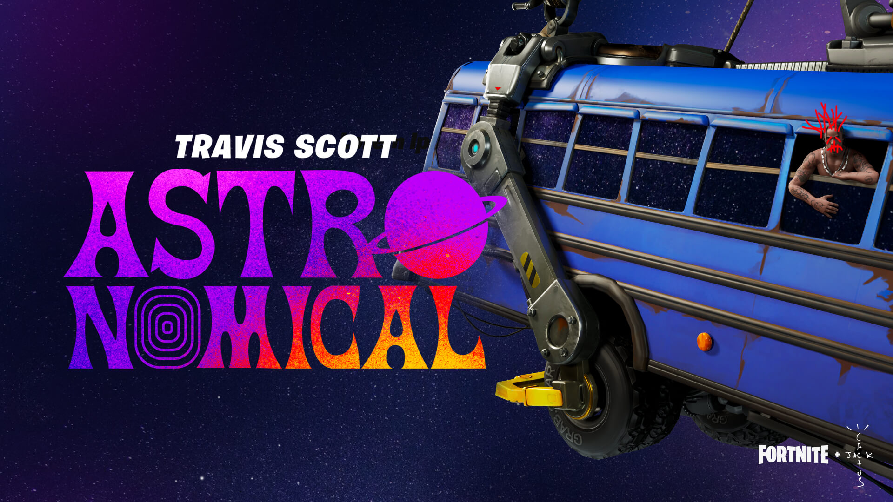

Um dos eventos mais marcantes da história do Fortnite foi o Astronomical, realizado em parceria com o rapper Travis Scott em abril de 2020.
O evento apresentou um show virtual dentro do próprio jogo. Durante a apresentação, os jogadores puderam acompanhar Travis Scott em diferentes cenários e efeitos especiais, tornando a experiência diferente de um show tradicional.
O personagem de Travis Scott apareceu em tamanho gigante e os jogadores foram transportados por diferentes ambientes durante a apresentação. O evento também contou com músicas como Sicko Mode, Goosebumps, Highest in the Room e The Scotts.
O primeiro show contou com mais de 12,3 milhões de jogadores simultaneamente dentro do Fortnite. O evento se tornou um dos maiores acontecimentos musicais realizados dentro de um jogo.
A música sempre teve uma grande importância na experiência do Fortnite. Durante os eventos, as músicas ajudam a criar o clima e tornar a experiência mais marcante para os jogadores.